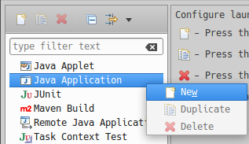
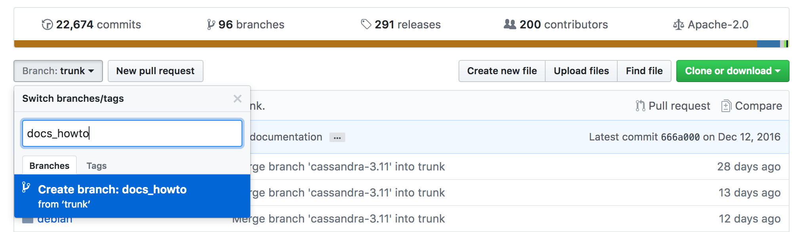
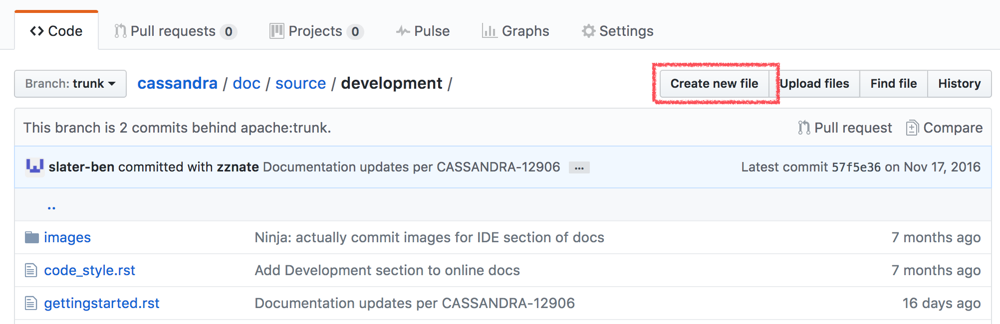
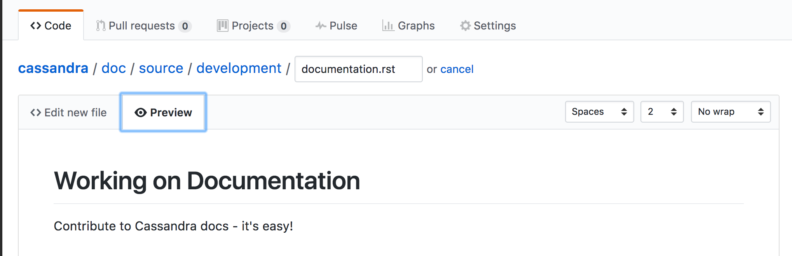
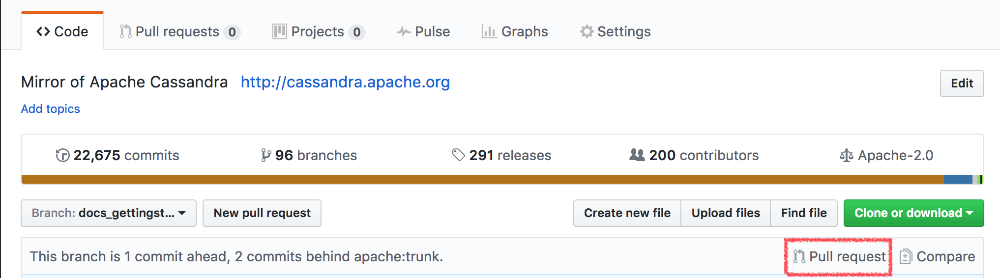

"I tested this performance enhancement on our application’s standard production load test and found a 3% improvement."
Contributing to Cassandra
Getting Started
Initial Contributions
Writing a new feature is just one way to contribute to the Cassandra project. In fact, making sure that supporting tasks, such as quality testing, documentation, and helping users are completed is just as important. Tracking the development of new features is an ongoing challenge for this project, like most open source projects. We suggest learning how this project gets things done before tackling a new feature. Here are some suggestions for ways to contribute:
-
Update the documentation
-
Answer questions on the user list
-
Review and test a submitted patch
-
Investigate and fix a reported bug
-
Create unit tests and d-tests
Updating documentation
The Cassandra documentation is maintained in the Cassandra source repository along with the Cassandra code base. To submit changes to the documentation, follow the standard process for submitting a patch.
Answering questions on the user list
Subscribe to the user list, look for some questions you can answer and write a reply. Simple as that! See the community page for details on how to subscribe to the mailing list.
Reviewing and testing a submitted patch
Reviewing patches is not the sole domain of committers. If others review a patch, it can reduce the load on the committers. Less time spent reviewing patches means committers can more great features or review more complex patches. Follow the instructions in How to review or alternatively, create a build with the patch and test it with your own workload. Add a comment to the JIRA ticket to let others know you’ve reviewed and tested, along with the results of your work. For example:
Investigate and/or fix a reported bug
Often, the hardest work in fixing a bug is reproducing it. Even if youdon’t have the knowledge to produce a fix, figuring out a way to reliably reproduce an issue can be a massive contribution. Document your method of reproduction in a JIRA comment or, better yet, produce an automated test that reproduces the issue and attach it to the ticket. If you go as far as producing a fix, follow the process for submitting a patch.
Create unit tests and Dtests
Test coverage for Cassandra will always benefit from more automated test coverage, as with most code bases. Before starting work on a particular area of code, consider reviewing and enhancing the existing test coverage. You’ll both improve your knowledge of the code before you start on an enhancement, and reduce the chance introducing issues with your change. See testing and patches for more detail.
Building and IDE Integration
Prerequisites
Building Cassandra from source is the first important step in contributing to the Apache Cassandra project. You will need to install Java (JDK 8 or 11, depending on which version you want to build Cassandra against, best is to install both and then switch between them when needed), Git, and Ant (including ant-optional).
Getting the source code
The source code for Cassandra is shared on the central Apache Git repository and organized by branch, one branch for each major version. You can access the code for the current development branch at gitbox.apache.org/repos/asf/cassandra.git (the primary location) or at github.com/apache/cassandra (a mirror location).
However, to develop a patch or a new feature, you should fork the Cassandra project first and then clone it from your own fork:
git clone https://github.com/<your_git_name>/cassandra.git cassandraBuilding Cassandra
Cassandra is a Java project which is built using Ant.
The build file, build.xml located in the root of the project content,
has various tasks defined (you can list all of them with some short
descriptions by running ant -p).
The build uses the Java compiler which is currently set up in your
shell. By default, the build uses Java 8. If you want to build
with Java 11, you need to either add a build property -Duse.jdk11=true
to your Ant build command or export the environment variable
CASSANDRA_USE_JDK11=true. Otherwise, if you run the build using
Java 11, the build script complains.
Now you can build Cassandra with the default task - just execute
ant or ant jar. This may take a significant amount of time depending
on artifacts that have to be downloaded or the number of classes that
need to be compiled. When the build completes, you can find a JAR file
in the build directory, and the database service can be started with
the bin/cassandra script.
Building a distribution
Some tasks you might be interested in are:
-
build- compile the production code without producing any JARs -
build-test- compile the test code without producing any JARs -
artifacts- generate Cassandra distribution inbuild/distdirectory and package it totar.gz(with and without sources) -
mvn-install- generatecassandra-allJAR artifact along with sources and JavaDoc, and install it in the local Maven repository -
realclean- clean the project from any build products, as well as from any dependencies (in fact that means removingbuildandlibdirectories)
|
Hint
Remember to clean the project after switching branches as build artifacts are versioned. |
There are other tasks related to testing, and they are covered in Testing section.
Setting up Cassandra in IntelliJ IDEA
IntelliJ IDEA by JetBrains is one of the most popular IDEs for Cassandra and Java development in general. The Community Edition can be freely downloaded with all features needed to get started developing Cassandra.
Use the following procedure for Cassandra 2.1.5+:
-
Generate project files by executing the following target from Ant build:
ant generate-idea-files-
Start IDEA.
-
Open the IDEA project from the checked-out Cassandra directory using
File > Openin IDEA’s menu.
The project generated by ant generate-idea-files contains
nearly everything you need to debug Cassandra and execute unit tests.
|
Hint
Although you do not need to build the project with |
You should be able to:
-
Run/debug defaults for JUnit
-
Run/debug configuration for Cassandra daemon
-
Read/modify the license header for Java source files
-
Study Cassandra code style
-
Inspections
|
Hint
If you wish to work with older Cassandra versions, see our wiki for instructions. |
Opening Cassandra in Apache NetBeans
Apache NetBeans is the elder of the open sourced java IDEs, and can be used for Cassandra development. There is no project setup or generation required to open Cassandra in NetBeans. Use the following procedure for Cassandra 4.0+.
First, clone and build Cassandra. Then execute the following steps to use NetBeans.
-
Start Apache NetBeans
-
Open the NetBeans project from the ide/ folder of the checked-out Cassandra directory using
File > Open Projectin NetBeans' menu.
You should be able to:
-
Build code
-
Run code
-
Debug code
-
Profile code
These capabilities use the build.xml script.
Build/Run/Debug Project are available via the Run/Debug menus, or the
project context menu.
Profile Project is available via the Profile menu. In the opened
Profiler tab, click the green "Profile" button.
Cassandra’s code style is honored in ide/nbproject/project.properties.
The JAVA8_HOME system environment variable must be set for NetBeans to execute the Run/Debug/Profile ant targets to execute.
Setting up Cassandra in Eclipse
Eclipse is a popular open source IDE that can be used for Cassandra development. Various Eclipse environments are available from the download page. The following guide was created with "Eclipse IDE for Java Developers".
These instructions were tested on Ubuntu 16.04 with Eclipse Neon (4.6) using Cassandra versions 2.1 through 3.x.
First, clone and build Cassandra. Then execute the following steps to use Eclipse.
-
Generate the IDEA files using ant:
ant generate-eclipse-files-
Start Eclipse.
-
Open the Eclipse project from the checked-out Cassandra directory using
File > Import > Existing ProjectsandWorkspace > Selectgit directory. Select the correct branch, such ascassandra-trunk. -
Confirm and select
Finishto import your project.
Find the project in Package Explorer or Project Explorer.
You should not get errors if you build the project automatically using these
instructions. Don’t set up the project before generating the files with ant.
You should be able to:
-
Run/debug defaults for JUnit
-
Run/debug Cassandra
-
Study Cassandra code style
Unit tests can be run from Eclipse by simply right-clicking the class
file or method and selecting Run As > JUnit Test.
Tests can be debugged by defining breakpoints (double-click line number) and
selecting Debug As > JUnit Test.
Alternatively all unit tests can be run from the command line as described in testing.
Debugging Cassandra Using Eclipse
There are two ways to start a local Cassandra instance with Eclipse for debugging. You can either start Cassandra from the command line or from within Eclipse.
Debugging Cassandra started at command line
-
Set environment variable to define remote debugging options for the JVM:
export JVM_EXTRA_OPTS="-agentlib:jdwp=transport=dt_socket,server=y,suspend=n,address=1414" -
Start Cassandra by executing the
./bin/cassandra
Next, connect to the running Cassandra process by:
-
In Eclipse, select
Run > Debug Configurations.

-
Create new remote application.

-
Configure connection settings by specifying a name and port 1414. Confirm
Debugand start debugging.

Debugging Cassandra started from Eclipse
Cassandra can also be started directly from Eclipse if you don’t want to use the command line.
-
In Eclipse, select
Run > Run Configurations.

-
Create new application.

-
Specify name, project and main class
org.apache.cassandra.service.CassandraDaemon

-
Configure additional JVM specific parameters that will start Cassandra with some of the settings created by the regular startup script. Change heap related values as needed.
-Xms1024M -Xmx1024M -Xmn220M -Xss256k -ea -XX:+UseThreadPriorities -XX:ThreadPriorityPolicy=42 -XX:+UseParNewGC -XX:+UseConcMarkSweepGC -XX:+CMSParallelRemarkEnabled -XX:+UseCondCardMark -javaagent:./lib/jamm-0.3.0.jar -Djava.net.preferIPv4Stack=true
-
Confirm
Debugand you should see the output of Cassandra start up in the Eclipse console.
You can now set breakpoints and start debugging!
General notes
You may sometimes encounter some odd build failures when running the ant commands above. If you do, start ant with the realclean option:
ant realcleanRemember that all the tasks mentioned above may depend on building source files. If there are actual compilation errors in the code, you may not be able to generate project files for IntelliJ Idea, Netbeans, or Eclipse. It is especially important that you have imported the project adequately into IDE before doing merges or rebases. Otherwise, if there are conflicts, the project cannot be opened in IDE, and you will be unable to use any fancy conflict resolution tools offered by those IDEs.
Testing
Creating tests is one of the most important and also most difficult parts of developing Cassandra. There are different ways to test your code depending on what you’re working on.
Cassandra tests can be divided into three main categories, based on the way how they are executed:
-
Java tests - tests implemented in Java and being a part of the Cassandra project. You can distinguish the following subcategories there:
-
JUnit tests - consists of unit tests, single-node integration tests and some tool tests; those tests may run a server with limited functionality in the same JVM as the test code
-
JVM distributed tests - integrated tests against one or multiple nodes, each running in their own classloader; also contains upgrade tests
-
Micro-benchmarks - micro-benchmarks implemented with JMH framework
-
-
CQLSH tests - CQLSH tests are Python tests written with the Nose test framework. They verify the CQLSH client that can be found in the bin directory. They aim at verifying CQLSH specific behavior like output formatting, autocompletion, parsing, etc).
-
Python distributed tests - Python distributed tests are implemented on top of the PyTest framework and located outside the main Cassandra project in the separate repository apache/cassandra-dtest. They test Cassandra via CCM verifying operation results, logs, and cluster state. Python Distributed tests are Cassandra version agnostic. They include upgrade tests.
The recipes for running those tests can be found in the cassandra-builds repository here.
Running full test suites locally takes hours, if not days. Beyond running specific tests you know are applicable, or are failing, to the work at hand, it is recommended to rely upon the project’s Continuous Integration systems. If you are not a committer, and don’t have access to a premium CircleCI plan, ask one of the committers to test your patch on the project’s ci-cassandra.apache.org.
Java tests
The simplest test to write for Cassandra code is a unit test. Cassandra
uses JUnit as a testing framework and test cases can be found in the
test/unit directory. Ideally, you’ll create a unit test for
your implementation that exclusively covers the class you created
(the unit under test).
Unfortunately, this is not always possible, because Cassandra doesn’t have a very mock friendly code base. Often you’ll find yourself in a situation where you have to use the embedded Cassandra instance to interact with your test. If you want to use CQL in your test, you can extend CQLTester and use some convenient helper methods, as shown here:
@Test
public void testBatchAndList() throws Throwable
{
createTable("CREATE TABLE %s (k int PRIMARY KEY, l list<int>)");
execute("BEGIN BATCH " +
"UPDATE %1$s SET l = l +[ 1 ] WHERE k = 0; " +
"UPDATE %1$s SET l = l + [ 2 ] WHERE k = 0; " +
"UPDATE %1$s SET l = l + [ 3 ] WHERE k = 0; " +
"APPLY BATCH");
assertRows(execute("SELECT l FROM %s WHERE k = 0"),
row(list(1, 2, 3)));
}JUnit tests
To run the unit tests:
ant testHowever, this is probably not what you want to do, since that
command would run all the unit tests (those from test/unit). It would
take about an hour or more to finish.
To run the specific test class or even a method, use the following command:
ant testsome -Dtest.name=<TestClassName> -Dtest.method=<testMethodName>-
test.nameproperty is for either a simple or fully qualified class name -
test.methodproperty is optional; if not specified, all test cases from the specified class are executed. Though, you can also specify multiple methods separating them by comma
You can also use the IDE to run the tests - when you generate IDE files and
properly import the Cassandra project, you can run the
tests by right-clicking on the test class or package name. Remember that
it is not enough to compile with IDE for some tests, and you need to
call ant jar to build the distribution artifacts. When
the test runs some tool as an external process, the tool expects
Cassandra artifacts to be in the build directory.
Note that those commands apply to the tests in the test/unit
directory. There are, however, some other test categories that have
tests in individual directories:
-
test/burn- to run them, first build the uber jar withant burn-test-jar, and then to run the tests callant test-burnorant burn-testsome -
test/long- to run them, callant long-testorant long-testsome -
test/memory- to run them, callant test-memory -
test/microbenchdiscussed in Micro-benchmarks -
test/distributeddiscussed in JVM distributed tests
|
Hint
If you get the error similar to the one below, install the
|
Stress and FQLTool tests
Stress and FQLTool are separate modules located under the tools
directory in the Cassandra project. They have their own source code and
unit tests. To run the tests for those tools, first, build jar artifacts
for them but calling:
ant fqltool-build fqltool-build-test
ant stress-build stress-build-testThen you can execute the tests with either one of the commands:
ant fqltool-test
ant stress-test
and stress-test-someor using your IDE.
JVM distributed tests
JVM distributed tests can run a cluster of nodes inside a single JVM -
they utilize a particular framework (that can be found at
apache/cassandra-in-jvm-dtest-api)
for that purpose. Those tests are intended to test features that require
more started nodes or verify specific behaviors when the nodes get
restarted, including upgrading them from one version to another. The
tests are located at the test/distributed directory of the Cassandra
project; however, only org.apache.cassandra.distributed.test and
org.apache.cassandra.upgrade packages contain the actual tests. The
rest of the files are various utilities related to the distributed test
framework.
The distributed tests can be run in few ways. ant test-jvm-dtest
command runs all the distributed JVM tests. It is not very useful; thus,
there is also ant test-jvm-dtest-some, which allows specifying test
class and test name in the similar way as you could do that for the
ant testsome command, for example:
ant test-jvm-dtest-some -Dtest.name=org.apache.cassandra.distributed.test.SchemaTest
ant test-jvm-dtest-some -Dtest.name=org.apache.cassandra.distributed.test.SchemaTest -Dtest.methods=readRepair|
Hint
Unlike for JUnit tests, for JVM distributed tests you need to provide fully qualified class name |
Distributed tests can also be run using IDE (in fact, you can even debug them).
Upgrade tests
JVM upgrade tests can be run precisely in the same way as any other JVM distributed tests. However, running them requires some preparation - for example, if a test verifies the upgrade from Cassandra 3.0 and Cassandra 3.11 to the current version (say Cassandra 4.0), you need to have prepared dtest uber JARs for all involved versions. To do this:
-
Check out Cassandra 3.0 based branch you want to test the upgrade from into some other directory
-
Build dtest uber JAR with
ant dtest-jarcommand -
Copy the created
build/dtest-3.0.x.jarto the build directory of your target Cassandra project -
Repeat the procedure for Cassandra 3.11
-
Once you have dtest jars of all the involved versions for the upgrade test, you can finally execute the test using your favorite method, say:
ant test-jvm-dtest-some -Dtest.name=org.apache.cassandra.distributed.upgrade.MixedModeReadTest|
Hint
You may pre-generate dtest uber JARs for certain past Cassandra releases, store is somewhere and reuse in you future work - no need to rebuild them all the time. |
Running multiple tests
It is possible to define a list of test classes to run with a single command.
Define a text file, by default called testlist.txt, and put it into your project directory.
Here is an example of that file:
org/apache/cassandra/db/ReadCommandTest.java
org/apache/cassandra/db/ReadCommandVerbHandlerTest.javaEssentially, you list the paths to the class files of the tests you want
to run. Then you call ant testclasslist, which uses the text file
to run the listed tests. Note that, by default, it applies to
the tests under the test/unit directory and takes the testlist.txt
file, but this behavior can be modified by providing additional
parameters:
ant testclasslist -Dtest.classlistprefix=<category> -Dtest.classlistfile=<class list file>For example, if you want to run the distributed tests this way, and say
our tests were listed in the distributed-tests-set.txt file (paths to
test classes relative to test/distributed directory), you can do that
by calling:
ant testclasslist -Dtest.classlistprefix=distributed -Dtest.classlistfile=distributed-tests-set.txtRunning coverage analysis
Coverage reports from the executed JVM tests can be obtained in two ways - through IDE - for example, IntelliJ supports running tests with coverage analysis (another run button next to the one for running in debug mode).
The other way is to run Ant target codecoverage. Basically, it works
for all the ways mentioned above of running JVM tests - the only
difference is that instead of specifying the target directly, you pass it
as a property called taskname. For example - given the original test
command is:
ant testsome -Dtest.name=org.apache.cassandra.utils.concurrent.AccumulatorTestto run it with coverage analysis, do:
ant codecoverage -Dtaskname=testsome -Dtest.name=org.apache.cassandra.utils.concurrent.AccumulatorTestIt applies to all the targets like test, testsome, test-long,
etc., even testclasslist. You can find the coverage report in
build/jacoco (index.html is the entry point for the HTML version,
but there are also XML and CSV reports).
Note that if you run various tests that way, the coverage information is
added to the previously collected runs. That is, you get the cumulative
coverage from all runs unless you clean up the project or at least clean
up the recorded coverage information by executing the command
ant jacoco-cleanup.
Micro-benchmarks
To run micro-benchmarks, first build the uber jar for the JMH framework.
Use the following ant command:
ant build-jmhThen, you can run either all benchmarks (from the test/microbench
directory) or the tests matching the name specified by the
benchmark.name property when executing the ant microbench command.
Whether you run all benchmarks or just a selected one, only classes
under the microbench package are selected. The class selection pattern
is actually .*microbench.*${benchmark.name}. For example,
in order to run org.apache.cassandra.test.microbench.ChecksumBench,
execute:
ant microbench -Dbenchmark.name=ChecksumBenchThe ant microbench command runs the benchmarks with default parameters
as defined in the build.xml file (see the microbench target
definition). If you want to run JMH with custom parameters,
consider using the test/bin/jmh script. In addition to allowing you to
customize JMH options, it also sets up the environment and JVM options
by running Cassandra init script (conf/cassandra-env.sh). Therefore,
it lets the environment for running the tests to be more similar to
the production environment. For example:
test/bin/jmh -gc true org.apache.cassandra.test.microbench.CompactionBench.compactTestYou may also find it useful to run the command to list all the tests:
test/bin/jmh -l or test/bin/jmh -lp (also showing the default
parameters). The list of all options can be shown by running
test/bin/jmh -h
Python tests
Docker
The Docker approach is recommended for running Python distributed tests. The behavior will be more repeatable, matching the same environment as the official testing on Cassandra CI.
Setup Docker
If you are on Linux, you need to install Docker using the system package manager.
If you are on MacOS, you can use either Docker Desktop or some other approach.
Pull the Docker image
The Docker image used on the official Cassandra CI can be found in this repository. You can use either docker/testing/ubuntu2004_j11.docker or docker/testing/ubuntu2004_j11_w_dependencies.docker The second choice has prefetched dependencies for building each main Cassandra branch. Those images can be either built locally (as per instructions in the GitHub repo) or pulled from the Docker Hub - see here.
First, pull the image from Docker Hub (it will either fetch or update the image you previously fetched):
docker pull apache/cassandra-testing-ubuntu2004-java11-w-dependenciesStart the container
docker run -di -m 8G --cpus 4 \
--mount type=bind,source=/path/to/cassandra/project,target=/home/cassandra/cassandra \
--mount type=bind,source=/path/to/cassandra-dtest,target=/home/cassandra/cassandra-dtest \
--name test \
apache/cassandra-testing-ubuntu2004-java11-w-dependencies \
dumb-init bash|
Hint
Many distributed tests are not that demanding in terms of resources - 4G / 2 cores should be enough to start one node. However, some tests really run multiple nodes, and some of them are automatically skipped if the machine has less than 32G (there is a way to force running them though). Usually 8G / 4 cores is a convenient choice which is enough for most of the tests. |
To log into the container, use the following docker exec command:
docker exec -it `docker container ls -f name=test -q` bashSetup Python environment
The tests are implemented in Python, so a Python virtual environment (see here for details) with all the required dependencies is good to be set up. If you are familiar with the Python ecosystem, you know what it is all about. Otherwise, follow the instructions; it should be enough to run the tests.
For Python distributed tests do:
cd /home/cassandra/cassandra-dtest
virtualenv --python=python3 --clear --always-copy ../dtest-venv
source ../dtest-venv/bin/activate
CASS_DRIVER_NO_CYTHON=1 pip install -r requirements.txtFor CQLSH tests, replace some paths:
cd /home/cassandra/cassandra/pylib
virtualenv --python=python3 --clear --always-copy ../../cqlsh-venv
source ../../cqlsh-venv/bin/activate
CASS_DRIVER_NO_CYTHON=1 pip install -r requirements.txt|
Hint
You may wonder why this weird environment variable |
The above commands are also helpful for importing those test projects
into your IDE. In that case, you need to run them on your host
system rather than in Docker container. For example, when you open the
project in IntelliJ, the Python plugin may ask you to select the runtime
environment. In this case, choose the existing virtualenv
based environment and point to bin/python under the created
dtest-venv directory (or cqlsh-venv, or whichever name you have
chosen).
Whether you want to play with Python distributed tests or CQLSH tests, you need to select the right virtual environment. Remember to switch to the one you want:
deactivate
source /home/cassandra/dtest-venv/bin/activateor
deactivate
source /home/cassandra/cqlsh-venv/bin/activateCQLSH tests
CQLSH tests are located in the pylib/cqlshlib/test directory. They are
based on the Nose framework. They require a running Cassandra cluster
(it can be one or more nodes cluster) as they start a CQL shell
client which tries to connect to a live node. Each test case starts the
CQLSH client as a subprocess, issues some commands, and verifies the
outcome returned by CQLSH to the console.
You need to set up and activate the virtualenv for CQLSH tests (see
Setup Python environment section for details).
So let’s start the cluster first - you can use CCM for that (note that
CCM gets automatically installed with the virtualenv and is
immediately available once the virtualenv is activated):
ccm create test -n 1 --install-dir=/home/cassandra/cassandra
ccm updateconf "enable_user_defined_functions: true"
ccm updateconf "enable_scripted_user_defined_functions: true"
ccm updateconf "cdc_enabled: true"
ccm start --wait-for-binary-protoWhen those commands complete successfully, there is a cluster up and
running, and you can run the CQLSH tests. To do so, go to the
pylib/cqlshlib directory (not to the test subdirectory) and call
the nosetests command without any arguments. The tests take around
5 minutes to complete.
Finally, remember that since you manually started the cluster, you need to stop it manually - just call:
ccm remove testThere is a helper script that does all of those things for you. In
particular, it builds the Cassandra project, creates a virtual
environment, runs the CCM cluster, executes the tests, and eventually
removes the cluster. You find the script in the pylib directory. The
only argument it requires is the Cassandra project directory:
cassandra@b69a382da7cd:~/cassandra/pylib$ ./cassandra-cqlsh-tests.sh /home/cassandra/cassandraAs you noticed, if you have already built Cassandra, the previous method
of running tests is much faster. Just remember that all the
ccm updateconf calls must be aligned with the Cassandra version you
are testing, with the supported features enabled.
Otherwise, Cassandra won’t start.
Running selected tests
You may run all test tests from the selected file by passing that file as an argument:
~/cassandra/pylib/cqlshlib$ nosetests test/test_constants.pyTo run a specific test case, you need to specify the module, class name, and the test name, for example:
~/cassandra/pylib/cqlshlib$ nosetests cqlshlib.test.test_cqlsh_output:TestCqlshOutput.test_boolean_outputFor more information on selecting tests with the Nose framework, see this page.
Python distributed tests
One way of doing integration or system testing at larger scale is using dtest (Cassandra distributed test). These dtests automatically setup Cassandra clusters with certain configurations and simulate use cases you want to test.
The best way to learn how to write dtests is probably by reading the introduction "http://www.datastax.com/dev/blog/how-to-write-a-dtest[How to Write a Dtest]". Looking at existing, recently updated tests in the project is another good activity. New tests must follow certain style conventions that are checked before contributions are accepted. In contrast to Cassandra, dtest issues and pull requests are managed on github, therefore you should make sure to link any created dtests in your Cassandra ticket and also refer to the ticket number in your dtest PR.
Creating a good dtest can be tough, but it should not prevent you from submitting patches! Please ask in the corresponding JIRA ticket how to write a good dtest for the patch. In most cases a reviewer or committer will able to support you, and in some cases they may offer to write a dtest for you.
Run the tests - quick examples
Note that you need to set up and activate the virtualenv for DTests (see Setup Python environment section for details). Tests are implemented with the PyTest framework, so you use the pytest command to run them. Let’s run some tests:
pytest --cassandra-dir=/home/cassandra/cassandra schema_metadata_test.py::TestSchemaMetadata::test_clustering_orderThat command runs the test_clustering_order test case from
TestSchemaMetadata class, located in the schema_metadata_test.py
file. You may also provide the file and class to run all test cases from
that class:
pytest --cassandra-dir=/home/cassandra/cassandra schema_metadata_test.py::TestSchemaMetadataor just the file name to run all test cases from all classes defined in that file.
pytest --cassandra-dir=/home/cassandra/cassandra schema_metadata_test.pyYou may also specify more individual targets:
pytest --cassandra-dir=/home/cassandra/cassandra schema_metadata_test.py::TestSchemaMetadata::test_basic_table_datatype schema_metadata_test.py::TestSchemaMetadata::test_udfIf you run pytest without specifying any test, it considers running all
the tests it can find. More on the test selection
here
You probably noticed that --cassandra-dir=/home/cassandra/cassandra
is constantly added to the command line. It is
one of the cassandra-dtest custom arguments - the mandatory one -
unless it is defined, you cannot run any Cassandra dtest.
Setting up PyTest
All the possible options can be listed by invoking pytest --help. You
see tons of possible parameters - some of them are native PyTest
options, and some come from Cassandra DTest. When you look carefully at
the help note, you notice that some commonly used options, usually fixed
for all the invocations, can be put into the pytest.ini file. In
particular, it is quite practical to define the following:
cassandra_dir = /home/cassandra/cassandra
log_cli = True
log_cli_level = DEBUGso that you do not have to provide --cassandra-dir param each time you
run a test. The other two options set up console logging - remove them
if you want logs stored only in log files.
Running tests with specific configuration
There are a couple of options to enforce exact test configuration (their names are quite self-explanatory):
-
--use-vnodes -
--num-token=xxx- enables the support of virtual nodes with a certain number of tokens -
--use-off-heap-memtables- use off-heap memtables instead of the default heap-based -
`--data-dir-count-per-instance=xxx - the number of data directories configured per each instance
Note that the list can grow in the future as new predefined
configurations can be added to dtests. It is also possible to pass extra
Java properties to each Cassandra node started by the tests - define
those options in the JVM_EXTRA_OPTS environment variable before
running the test.
Listing the tests
You can do a dry run, so that the tests are only listed and not
invoked. To do that, add --collect-only to the pytest command.
That additional -q option will print the results in the same
format as you would pass the test name to the pytest command:
pytest --collect-only -qlists all the tests pytest would run if no particular test is specified. Similarly, to list test cases in some class, do:
$ pytest --collect-only -q schema_metadata_test.py::TestSchemaMetadata
schema_metadata_test.py::TestSchemaMetadata::test_creating_and_dropping_keyspace
schema_metadata_test.py::TestSchemaMetadata::test_creating_and_dropping_table
schema_metadata_test.py::TestSchemaMetadata::test_creating_and_dropping_table_with_2ary_indexes
schema_metadata_test.py::TestSchemaMetadata::test_creating_and_dropping_user_types
schema_metadata_test.py::TestSchemaMetadata::test_creating_and_dropping_udf
schema_metadata_test.py::TestSchemaMetadata::test_creating_and_dropping_uda
schema_metadata_test.py::TestSchemaMetadata::test_basic_table_datatype
schema_metadata_test.py::TestSchemaMetadata::test_collection_table_datatype
schema_metadata_test.py::TestSchemaMetadata::test_clustering_order
schema_metadata_test.py::TestSchemaMetadata::test_compact_storage
schema_metadata_test.py::TestSchemaMetadata::test_compact_storage_composite
schema_metadata_test.py::TestSchemaMetadata::test_nondefault_table_settings
schema_metadata_test.py::TestSchemaMetadata::test_indexes
schema_metadata_test.py::TestSchemaMetadata::test_durable_writes
schema_metadata_test.py::TestSchemaMetadata::test_static_column
schema_metadata_test.py::TestSchemaMetadata::test_udt_table
schema_metadata_test.py::TestSchemaMetadata::test_udf
schema_metadata_test.py::TestSchemaMetadata::test_udaYou can copy/paste the selected test case to the pytest command to run it.
Filtering tests
Based on configuration
Most tests run with any configuration, but a subset of tests (test cases) only run if a specific configuration is used. In particular, there are tests annotated with:
-
@pytest.mark.vnodes- the test is only invoked when the support of virtual nodes is enabled -
@pytest.mark.no_vnodes- the test is only invoked when the support of virtual nodes is disabled -
@pytest.mark.no_offheap_memtables- the test is only invoked if off-heap memtables are not used
Note that enabling or disabling vnodes is obviously mutually exclusive. If a test is marked to run only with vnodes, it does not run when vnodes is disabled; similarly, when a test is marked to run only without vnodes, it does not run when vnodes is enabled - therefore, there are always some tests which would not run with a single configuration.
Based on resource usage
There are also tests marked with:
@pytest.mark.resource_intensive
which means that the test requires more resources than a regular test because it usually starts a cluster of several nodes. The meaning of resource-intensive is hardcoded to 32GB of available memory, and unless your machine or docker container has at least that amount of RAM, such test is skipped. There are a couple of arguments that allow for some control of that automatic exclusion:
-
--force-resource-intensive-tests- forces the execution of tests marked asresource_intensive, regardless of whether there is enough memory available or not -
--only-resource-intensive-tests- only run tests marked asresource_intensive- it makes all the tests withoutresource_intensiveannotation to be filtered out; technically, it is equivalent to passing native PyTest argument:-m resource_intensive -
--skip-resource-intensive-tests- skip all tests marked asresource_intensive- it is the opposite argument to the previous one, and it is equivalent to the PyTest native argument:-m 'not resource_intensive'
Based on the test type
Upgrade tests are marked with:
@pytest.mark.upgrade_test
Those tests are not invoked by default at all (just like running
PyTest with -m 'not upgrade_test'), and you have to add some extra
options to run them:
* --execute-upgrade-tests - enables execution of upgrade tests along
with other tests - when this option is added, the upgrade tests are not
filtered out
* --execute-upgrade-tests-only - execute only upgrade tests and filter
out all other tests which do not have @pytest.mark.upgrade_test
annotation (just like running PyTest with -m 'upgrade_test')
Filtering examples
It does not matter whether you want to invoke individual tests or all
tests or whether you only want to list them; the above filtering rules
apply. So by using --collect-only option, you can learn which tests
would be invoked.
To list all the applicable tests for the current configuration, use the following command:
pytest --collect-only -q --execute-upgrade-tests --force-resource-intensive-testsList tests specific to vnodes (which would only run if vnodes are enabled):
pytest --collect-only -q --execute-upgrade-tests --force-resource-intensive-tests --use-vnodes -m vnodesList tests that are not resource-intensive
pytest --collect-only -q --execute-upgrade-tests --skip-resource-intensive-testsUpgrade tests
Upgrade tests always involve more than one product version. There are two kinds of upgrade tests regarding the product versions they span - let’s call them fixed and generated.
In case of fixed tests, the origin and target versions are hardcoded. They look pretty usual, for example:
pytest --collect-only -q --execute-upgrade-tests --execute-upgrade-tests-only upgrade_tests/upgrade_supercolumns_test.pyprints:
upgrade_tests/upgrade_supercolumns_test.py::TestSCUpgrade::test_upgrade_super_columns_through_all_versions
upgrade_tests/upgrade_supercolumns_test.py::TestSCUpgrade::test_upgrade_super_columns_through_limited_versionsWhen you look into the code, you will see the fixed upgrade path:
def test_upgrade_super_columns_through_all_versions(self):
self._upgrade_super_columns_through_versions_test(upgrade_path=[indev_2_2_x, indev_3_0_x, indev_3_11_x, indev_trunk])The generated upgrade tests are listed several times - the first occurrence of the test case is a generic test definition, and then it is repeated many times in generated test classes. For example:
pytest --cassandra-dir=/home/cassandra/cassandra --collect-only -q --execute-upgrade-tests --execute-upgrade-tests-only upgrade_tests/cql_tests.py -k test_setprints:
upgrade_tests/cql_tests.py::cls::test_set
upgrade_tests/cql_tests.py::TestCQLNodes3RF3_Upgrade_current_2_2_x_To_indev_2_2_x::test_set
upgrade_tests/cql_tests.py::TestCQLNodes3RF3_Upgrade_current_3_0_x_To_indev_3_0_x::test_set
upgrade_tests/cql_tests.py::TestCQLNodes3RF3_Upgrade_current_3_11_x_To_indev_3_11_x::test_set
upgrade_tests/cql_tests.py::TestCQLNodes3RF3_Upgrade_current_4_0_x_To_indev_4_0_x::test_set
upgrade_tests/cql_tests.py::TestCQLNodes3RF3_Upgrade_indev_2_2_x_To_indev_3_0_x::test_set
upgrade_tests/cql_tests.py::TestCQLNodes3RF3_Upgrade_indev_2_2_x_To_indev_3_11_x::test_set
upgrade_tests/cql_tests.py::TestCQLNodes3RF3_Upgrade_indev_3_0_x_To_indev_3_11_x::test_set
upgrade_tests/cql_tests.py::TestCQLNodes3RF3_Upgrade_indev_3_0_x_To_indev_4_0_x::test_set
upgrade_tests/cql_tests.py::TestCQLNodes3RF3_Upgrade_indev_3_11_x_To_indev_4_0_x::test_set
upgrade_tests/cql_tests.py::TestCQLNodes3RF3_Upgrade_indev_4_0_x_To_indev_trunk::test_set
upgrade_tests/cql_tests.py::TestCQLNodes2RF1_Upgrade_current_2_2_x_To_indev_2_2_x::test_set
upgrade_tests/cql_tests.py::TestCQLNodes2RF1_Upgrade_current_3_0_x_To_indev_3_0_x::test_set
upgrade_tests/cql_tests.py::TestCQLNodes2RF1_Upgrade_current_3_11_x_To_indev_3_11_x::test_set
upgrade_tests/cql_tests.py::TestCQLNodes2RF1_Upgrade_current_4_0_x_To_indev_4_0_x::test_set
upgrade_tests/cql_tests.py::TestCQLNodes2RF1_Upgrade_indev_2_2_x_To_indev_3_0_x::test_set
upgrade_tests/cql_tests.py::TestCQLNodes2RF1_Upgrade_indev_2_2_x_To_indev_3_11_x::test_set
upgrade_tests/cql_tests.py::TestCQLNodes2RF1_Upgrade_indev_3_0_x_To_indev_3_11_x::test_set
upgrade_tests/cql_tests.py::TestCQLNodes2RF1_Upgrade_indev_3_0_x_To_indev_4_0_x::test_set
upgrade_tests/cql_tests.py::TestCQLNodes2RF1_Upgrade_indev_3_11_x_To_indev_4_0_x::test_set
upgrade_tests/cql_tests.py::TestCQLNodes2RF1_Upgrade_indev_4_0_x_To_indev_trunk::test_setIn this example, the test case name is just test_set, and the class
name is TestCQL - the suffix of the class name is automatically
generated from the provided specification. The first component is the
cluster specification - there are two variants: Nodes2RF1 and Nodes3RF3
- they denote that the upgrade is tested on 2 nodes cluster with a
keyspace using replication factor = 1. Analogously the second variant
uses 3 nodes cluster with RF = 3.
Then, there is the upgrade specification - for example,
Upgrade_indev_3_11_x_To_indev_4_0_x - which means that this test
upgrades from the development version of Cassandra 3.11 to the
development version of Cassandra 4.0 - the meaning of indev/current
and where they are defined is explained later.
When you look into the implementation, you notice that such upgrade test
classes inherit from UpgradeTester class, and they have the
specifications defined at the end of the file. In this particular case,
it is something like:
topology_specs = [
{'NODES': 3,
'RF': 3,
'CL': ConsistencyLevel.ALL},
{'NODES': 2,
'RF': 1},
]
specs = [dict(s, UPGRADE_PATH=p, __test__=True)
for s, p in itertools.product(topology_specs, build_upgrade_pairs())]As you can see, there is a list of the cluster specifications and
the cross product is calculated with upgrade paths returned by the
build_upgrade_pairs() function. That list of specifications is used to
dynamically generate upgrade tests.
Suppose you need to test something specifically for your scenario. In
that case, you can add more cluster specifications, like a test with 1
node or a test with 5 nodes with some different replication factor or
consistency level. The build_upgrade_pairs() returns the list of
upgrade paths (actually just the origin and target version). That list
is generated according to the upgrade manifest.
Upgrade manifest
The upgrade manifest is a file where all the upgrade paths are defined.
It is a regular Python file located at
upgrade_tests/upgrade_manifest.py.
As you noticed, Cassandra origin and target version descriptions
mentioned in the upgrade test consist of indev or current prefix
followed by version string. The definitions of each such version
description can be found in the manifest, for example:
indev_3_11_x = VersionMeta(name='indev_3_11_x', family=CASSANDRA_3_11, variant='indev', version='github:apache/cassandra-3.11', min_proto_v=3, max_proto_v=4, java_versions=(8,))
current_3_11_x = VersionMeta(name='current_3_11_x', family=CASSANDRA_3_11, variant='current', version='3.11.10', min_proto_v=3, max_proto_v=4, java_versions=(8,))There are a couple of different properties which describe those two versions:
-
name- is a name as you can see in the names of the generated test classes -
family- families is an enumeration defined in the beginning of the upgrade manifest - say familyCASSANDRA_3_11is just a string"3.11". Some major features were introduced or removed with new version families, and therefore some checks can be done or some features can be enabled/disabled according to that, for example:
if self.cluster.version() < CASSANDRA_4_0:
node1.nodetool("enablethrift")But it is also used to determine whether our checked-out version matches the target version in the upgrade pair (more on that later)
-
variantandversion- there areindevorcurrentvariants:-
indevvariant means that the development version of Cassandra will be used. That is, that version is checked out from the Git repository and built before running the upgrade (CCM does it). In this case, the version string is specified asgithub:apache/cassandra-3.11, which means that it will checkout thecassandra-3.11branch from the GitHub repository whose alias isapache. Aliases are defined in CCM configuration file, usually located at~/.ccm/config- in this particular case, it could be something like:
-
[aliases]
apache:git@github.com:apache/cassandra.git-
currentvariant means that a released version of Cassandra will be used. It means that Cassandra distribution denoted by the specified version (3.11.10 in this case) is downloaded from the Apache repository/mirror - again, the repository can be defined in CCM configuration file, under repositories section, something like:
[repositories]
cassandra=https://archive.apache.org/dist/cassandra-
min_proto_v,max_proto_v- the range of usable Cassandra driver protocol versions -
java_versions- supported Java versions
The possible upgrade paths are defined later in the upgrade manifest -
when you scroll the file, you will find the MANIFEST map which may
look similar to:
MANIFEST = {
current_2_1_x: [indev_2_2_x, indev_3_0_x, indev_3_11_x],
current_2_2_x: [indev_2_2_x, indev_3_0_x, indev_3_11_x],
current_3_0_x: [indev_3_0_x, indev_3_11_x, indev_4_0_x],
current_3_11_x: [indev_3_11_x, indev_4_0_x],
current_4_0_x: [indev_4_0_x, indev_trunk],
indev_2_2_x: [indev_3_0_x, indev_3_11_x],
indev_3_0_x: [indev_3_11_x, indev_4_0_x],
indev_3_11_x: [indev_4_0_x],
indev_4_0_x: [indev_trunk]
}It is a simple map where for the origin version (as a key), there is a list of possible target versions (as a value). Say:
current_4_0_x: [indev_4_0_x, indev_trunk]means that upgrades from current_4_0_x to
indev_4_0_x and from current_4_0_x to indev_trunk will be considered.
You may make changes to that upgrade scenario in your development branch
according to your needs.
There is a command-line option that allows filtering across upgrade
scenarios: --upgrade-version-selection=xxx. The possible values for
that options are as follows:
-
indev- which is the default, only selects those upgrade scenarios where the target version is inindevvariant -
both- selects upgrade paths where either both origin and target versions are in the same variant or have the same version family -
releases- selects upgrade paths between versions in current variant or from thecurrenttoindevvariant if both have the same version family -
all- no filtering at all - all variants are tested
Running upgrades with local distribution
The upgrade test can use your local Cassandra distribution, the one
specified by the cassandra_dir property, as the target version if the
following preconditions are satisfied:
-
the target version is in the
indevvariant, -
the version family set in the version description matches the version family of your local distribution
For example, your local distribution is branched off from the
cassandra-4.0 branch, likely matching indev_4_0_x. It means that the
upgrade path with target version indev_4_0_x uses your local
distribution.
There is a handy command line option which will filter out all the
upgrade tests which do not match the local distribution:
--upgrade-target-version-only. Given you are on cassandra-4.0 branch,
when applied to the previous example, it will be something similar to:
pytest --cassandra-dir=/home/cassandra/cassandra --collect-only -q --execute-upgrade-tests --execute-upgrade-tests-only upgrade_tests/cql_tests.py -k test_set --upgrade-target-version-onlyprints:
upgrade_tests/cql_tests.py::cls::test_set
upgrade_tests/cql_tests.py::TestCQLNodes3RF3_Upgrade_current_4_0_x_To_indev_4_0_x::test_set
upgrade_tests/cql_tests.py::TestCQLNodes3RF3_Upgrade_indev_3_0_x_To_indev_4_0_x::test_set
upgrade_tests/cql_tests.py::TestCQLNodes3RF3_Upgrade_indev_3_11_x_To_indev_4_0_x::test_set
upgrade_tests/cql_tests.py::TestCQLNodes2RF1_Upgrade_current_4_0_x_To_indev_4_0_x::test_set
upgrade_tests/cql_tests.py::TestCQLNodes2RF1_Upgrade_indev_3_0_x_To_indev_4_0_x::test_set
upgrade_tests/cql_tests.py::TestCQLNodes2RF1_Upgrade_indev_3_11_x_To_indev_4_0_x::test_setYou can see that the upgrade tests were limited to the ones whose target
version is indev and family matches 4.0.
Logging
A couple of common PyTest arguments control what is logged to the file
and the console from the Python test code. Those arguments which start
from --log-xxx are pretty well described in the help message
(pytest --help) and in PyTest documentation, so it will not be discussed
further. However, most of the tests start with the cluster of
Cassandra nodes, and each node generates its own logging information and
has its own data directories.
By default the logs from the nodes are copied to the unique directory created under logs subdirectory under root of dtest project. For example:
(venv) cassandra@b69a382da7cd:~/cassandra-dtest$ ls logs/ -1
1627455923457_test_set
1627456019264_test_set
1627456474949_test_set
1627456527540_test_list
lastThe last item is a symbolic link to the directory containing the logs
from the last executed test. Each such directory includes logs from each
started node - system, debug, GC as well as standard streams registered
upon each time the node was started:
(venv) cassandra@b69a382da7cd:~/cassandra-dtest$ ls logs/last -1
node1.log
node1_debug.log
node1_gc.log
node1_startup-1627456480.3398306-stderr.log
node1_startup-1627456480.3398306-stdout.log
node1_startup-1627456507.2186499-stderr.log
node1_startup-1627456507.2186499-stdout.log
node2.log
node2_debug.log
node2_gc.log
node2_startup-1627456481.10463-stderr.log
node2_startup-1627456481.10463-stdout.logThose log files are not collected if --delete-logs command-line option
is added to PyTest. The nodes also produce data files which may be
sometimes useful to examine to resolve some failures. Those files are
usually deleted when the test is completed, but there are some options
to control that behavior:
-
--keep-test-dir- keep the whole CCM directory with data files and logs when the test completes -
--keep-failed-test-dir– only keep that directory when the test has failed
Now, how to find where is that directory for the certain test - you need
to grab that information from the test logs - for example, you may add
-s option to the command line and then look for "dtest_setup INFO"
messages. For example:
05:56:06,383 dtest_setup INFO cluster ccm directory: /tmp/dtest-0onwvgkrsays that the cluster work directory is /tmp/dtest-0onwvgkr, and all
node directories can be found under the test subdirectory:
(venv) cassandra@b69a382da7cd:~/cassandra-dtest$ ls /tmp/dtest-0onwvgkr/test -1
cluster.conf
node1
node2Performance Testing
Performance tests for Cassandra are a special breed of tests that are not part of the usual patch contribution process. In fact, many people contribute a lot of patches to Cassandra without ever running performance tests. However, they are important when working on performance improvements; such improvements must be measurable.
Several tools exist for running performance tests. Here are a few to investigate:
-
Described above Micro-benchmarks
-
cassandra-stress: built-in Cassandra stress tool
Code Style
Code Style
General Code Conventions
-
The Cassandra project follows Sun’s Java coding conventions with one important exception:
{and}are always placed on a new line.
Exception handling
-
Never ever write
catch (…) {}orcatch (…) { logger.error() }merely to satisfy Java’s compile-time exception checking. Always propagate the exception up or throwRuntimeException(or, if it "can’t happen,"AssertionError). This makes the exceptions visible to automated tests. -
Avoid propagating up checked exceptions that no caller handles. Rethrow as
RuntimeException(orIOError, if that is more applicable). -
Similarly, logger.warn() is often a cop-out: is this an error or not? If it is don’t hide it behind a warn; if it isn’t, no need for the warning.
-
If you genuinely know an exception indicates an expected condition, it’s okay to ignore it BUT this must be explicitly explained in a comment.
Boilerplate
-
Avoid redundant
@Overrideannotations when implementing abstract or interface methods. -
Do not implement equals or hashcode methods unless they are actually needed.
-
Prefer public final fields to private fields with getters. (But prefer encapsulating behavior in "real" methods to either.)
-
Prefer requiring initialization in the constructor to setters.
-
Avoid redundant
thisreferences to member fields or methods. -
Do not extract interfaces (or abstract classes) unless you actually need multiple implementations of it.
-
Always include braces for nested levels of conditionals and loops. Only avoid braces for single level.
Multiline statements
-
Try to keep lines under 120 characters, but use good judgement. It is better to exceed 120 by a little, than split a line that has no natural splitting points.
-
When splitting inside a method call, use one line per parameter and align the items called:
SSTableWriter writer = new SSTableWriter(cfs.getTempSSTablePath(),
columnFamilies.size(),
StorageService.getPartitioner());-
When splitting a ternary, use one line per clause, carry the operator, and align by indenting with 4 white spaces:
var = bar == null
? doFoo()
: doBar();Whitespace
-
Make sure to use 4 spaces instead of the tab character for all your indentation.
-
Many lines in the current files have a bunch of trailing whitespace. If you encounter incorrect whitespace, clean up in a separate patch. Current and future reviewers won’t want to review whitespace diffs.
Imports
Observe the following order for your imports:
java
[blank line]
com.google.common
org.apache.commons
org.junit
org.slf4j
[blank line]
everything else alphabeticallyFormat files for IDEs
-
IntelliJ: intellij-codestyle.jar
-
IntelliJ 13: gist for IntelliJ 13 (this is a work in progress, still working on javadoc, ternary style, line continuations, etc)
-
Eclipse: (github.com/tjake/cassandra-style-eclipse)
How-to Commit
If you are a committer, feel free to pick any process that works for you - so long as you are planning to commit the work yourself.
Here is how committing and merging typically look for merging and pushing for tickets that follow the convention (if patch-based). A hypothetical CASSANDRA-12345 ticket used in the example is a cassandra-3.0 based bug fix that requires different code for cassandra-3.3, and trunk. Contributor Jackie is supplying a patch for the root branch (12345-3.0.patch), and patches for the remaining branches (12345-3.3.patch, 12345-trunk.patch).
- On cassandra-3.0
-
-
git am -3 12345-3.0.patch(if we have a problem b/c of CHANGES.txt not merging anymore, we modify it ourselves, in place)
-
- On cassandra-3.3
-
-
git merge cassandra-3.0 -s ours -
git apply -3 12345-3.3.patch(likely to have an issue with CHANGES.txt here: modify it ourselves, thengit add CHANGES.txt) -
git commit -amend
-
- On trunk
-
-
git merge cassandra-3.3 -s ours -
git apply -3 12345-trunk.patch(likely to have an issue with CHANGES.txt here: modify it ourselves, thengit add CHANGES.txt) -
git commit -amend
-
- On any branch
-
-
git push origin cassandra-3.0 cassandra-3.3 trunk -atomic
-
Same scenario, but a branch-based contribution:
- On cassandra-3.0
-
-
git cherry-pick <sha-of-3.0-commit>(if we have a problem b/c of CHANGES.txt not merging anymore, we modify it ourselves, in place)
-
- On cassandra-3.3
-
-
git merge cassandra-3.0 -s ours -
git format-patch -1 <sha-of-3.3-commit> -
git apply -3 <sha-of-3.3-commit>.patch(likely to have an issue with CHANGES.txt here: modify it ourselves, thengit add CHANGES.txt) -
git commit -amend
-
- On trunk
-
-
git merge cassandra-3.3 -s ours -
git format-patch -1 <sha-of-trunk-commit> -
git apply -3 <sha-of-trunk-commit>.patch(likely to have an issue with CHANGES.txt here: modify it ourselves, thengit add CHANGES.txt) -
git commit -amend
-
- On any branch
-
-
git push origin cassandra-3.0 cassandra-3.3 trunk -atomic
-
|
Notes on git flags
The The |
|
Tip
The fastest way to get a patch from someone’s commit in a branch on github if you don’t have their repo in remote, is to append .patch to the commit url:
|
Review Checklist
When reviewing tickets in Apache JIRA, the following items should be covered as part of the review process:
General
-
Does it conform to the
code_styleguidelines? -
Is there any redundant or duplicate code?
-
Is the code as modular as possible?
-
Can any singletons be avoided?
-
Can any of the code be replaced with library functions?
-
Are units of measurement used in the code consistent, both internally and with the rest of the ecosystem?
Error-Handling
-
Are all data inputs and outputs checked (for the correct type, length, format, and range) and encoded?
-
Where third-party utilities are used, are returning errors being caught?
-
Are invalid parameter values handled?
-
Are any Throwable/Exceptions passed to the JVMStabilityInspector?
-
Are errors well-documented? Does the error message tell the user how to proceed?
-
Do exceptions propagate to the appropriate level in the code?
Documentation
-
Do comments exist and describe the intent of the code (the "why", not the "how")?
-
Are javadocs added where appropriate?
-
Is any unusual behavior or edge-case handling described?
-
Are data structures and units of measurement explained?
-
Is there any incomplete code? If so, should it be removed or flagged with a suitable marker like ‘TODO’?
-
Does the code self-document via clear naming, abstractions, and flow control?
-
Have NEWS.txt, the cql3 docs, and the native protocol spec been updated if needed?
-
Is the ticket tagged with "client-impacting" and "doc-impacting", where appropriate?
-
Has lib/licences been updated for third-party libs? Are they Apache License compatible?
-
Is the Component on the JIRA ticket set appropriately?
Testing
-
Is the code testable? i.e. don’t add too many or hide dependencies, unable to initialize objects, test frameworks can use methods etc.
-
Do tests exist and are they comprehensive?
-
Do unit tests actually test that the code is performing the intended functionality?
-
Could any test code use common functionality (e.g. ccm, dtest, or CqlTester methods) or abstract it there for reuse?
-
If the code may be affected by multi-node clusters, are there dtests?
-
If the code may take a long time to test properly, are there CVH tests?
-
Is the test passing on CI for all affected branches (up to trunk, if applicable)? Are there any regressions?
-
If patch affects read/write path, did we test for performance regressions w/multiple workloads?
-
If adding a new feature, were tests added and performed confirming it meets the expected SLA/use-case requirements for the feature?
Contributing Code Changes
Choosing What to Work on
Submitted patches can include bug fixes, changes to the Java code base, improvements for tooling (both Java or Python), documentation, testing or any other changes that requires changing the code base. Although the process of contributing code is always the same, the amount of work and time it takes to get a patch accepted also depends on the kind of issue you’re addressing.
- As a general rule of thumb
-
-
Major new features and significant changes to the code base will likely not be accepted without deeper discussion within the developer community.
-
Bug fixes take higher priority compared to features.
-
The extent to which tests are required depends on how likely your changes will effect the stability of Cassandra in production. Tooling changes requires fewer tests than storage engine changes.
-
Less complex patches will be reviewed faster; consider breaking up an issue into individual tasks and contributions that can be reviewed separately.
-
|
Hint
Not sure what to work? Just pick an issue marked as Low Hanging Fruit Complexity in JIRA, which flags issues that often turn out to be good starter tasks for beginners. |
Before You Start Coding
Although contributions are highly appreciated, we do not guarantee that
every contribution will become a part of Cassandra. Therefore, it’s
generally a good idea to first get some feedback on the thing you plan
to do, especially about any new features or major changes to the
code base. You can reach out to other developers on the mailing list or
Slack.
- You should also
-
-
Avoid redundant work by searching for already reported issues in JIRA to work on.
-
Create a new issue early in the process describing what you’re working on - before finishing your patch.
-
Link related JIRA issues with your own ticket to provide a better context.
-
Update your ticket from time to time by giving feedback on your progress and link a GitHub WIP branch with your current code.
-
Ping people who you actively like to ask for advice on JIRA by mentioning users.
-
- There are also some fixed rules that you need to be aware
-
-
Patches will only be applied to branches by following the release model
-
Code must be testable
-
Code must follow the
code_styleconvention -
Changes must not break compatibility between different Cassandra versions
-
Contributions must be covered by the Apache License
-
Choosing the Right Branches to Work on
There are currently multiple Cassandra versions maintained in individual branches:
| Version | Policy |
|---|---|
4.0 |
Code freeze (see below) |
3.11 |
Critical bug fixes only |
3.0 |
Critical bug fixes only |
2.2 |
Critical bug fixes only |
2.1 |
Critical bug fixes only |
Corresponding branches in git are easy to recognize as they are named
cassandra-<release> (e.g. cassandra-3.0). The trunk branch is an
exception, as it contains the most recent commits from all other
branches and is used for creating new branches for future tick-tock
releases.
4.0 Code Freeze
Patches for new features are currently not accepted for 4.0 or any earlier versions. All efforts should focus on stabilizing the 4.0 branch before the first official release. During that time, only the following patches will be considered for acceptance:
-
Bug fixes
-
Measurable performance improvements
-
Changes not distributed as part of the release such as:
-
Testing related improvements and fixes
-
Build and infrastructure related changes
-
Documentation
Bug Fixes
Creating patches for bug fixes is a bit more complicated and will
depend on how many different versions of Cassandra are affected. In each
case, the order for merging such changes will be cassandra-2.1 →
cassandra-2.2 → cassandra-3.0 → cassandra-3.x → trunk.
But don’t worry, merging from 2.1 would be the worst case for bugs that
affect all currently supported versions, an uncommon event. As a
contributor, you’re also not expected to provide a single patch for each
version. What you need to do however is:
-
Be clear about which versions you could verify to be affected by the bug
-
For 2.x: ask if a bug qualifies to be fixed in this release line, as this may be handled on case by case bases
-
If possible, create a patch against the lowest version in the branches listed above (e.g. if you found the bug in 3.9 you should try to fix it already in 3.0)
-
Test if the patch can be merged cleanly across branches in the direction listed above
-
Be clear which branches may need attention by the committer or even create custom patches for those if you can
Creating a Patch
So you’ve finished coding and the great moment arrives: it’s time to submit your patch!
-
Create a branch for your changes if you haven’t done already. Many contributors name their branches based on ticket number and Cassandra version, e.g.
git checkout -b 12345-3.0orgit checkout -b CASSANDRA-12345-3.0.
|
Hint
When working on multiple patches at the same time, instead of cloning the repository separately for each of them, set up multiple working trees for different Cassandra versions from the same repository using Git worktrees feature. |
-
Verify that you follow Cassandra’s
code_style -
Make sure all tests (including yours) pass using ant as described in
testing. If you suspect a test failure is unrelated to your change, it may be useful to check the test’s status by searching the issue tracker or looking at CI results for the relevant upstream version. Note that the full test suites take many hours to complete, so it is common to only run specific relevant tests locally before uploading a patch. Once a patch has been uploaded, the reviewer or committer can help setup CI jobs to run the full test suites. -
Consider going through the
how_to_reviewfor your code. This will help you to understand how others will consider your change for inclusion. -
Don’t make the committer squash commits for you in the root branch either. Multiple commits are fine - and often preferable - during review stage, especially for incremental review, but once +1d, do either:
-
Attach a patch to JIRA with a single squashed commit in it (per branch), or
-
Squash the commits in-place in your branches into one
-
Include a CHANGES.txt entry (put it at the top of the list), and format the commit message appropriately in your patch as below. Please note that only user-impacting items should be listed in CHANGES.txt. If you fix a test that does not affect users and does not require changes in runtime code, then no CHANGES.txt entry is necessary.
<One sentence description, usually Jira title and CHANGES.txt summary> <Optional lengthier description> patch by <Authors>; reviewed by <Reviewers> for CASSANDRA-##### -
When you’re happy with the result, create a patch:
git add <any new or modified file> git commit -m '<message>' git format-patch HEAD~1 mv <patch-file> <ticket-branchname.txt> (e.g. 12345-trunk.txt, 12345-3.0.txt)
Alternatively, many contributors prefer to make their branch available on GitHub. In this case, fork the Cassandra repository on GitHub and push your branch:
git push --set-upstream origin 12345-3.0-
To make life easier for your reviewer/committer, you may want to make sure your patch applies cleanly to later branches and create additional patches/branches for later Cassandra versions to which your original patch does not apply cleanly. That said, this is not critical, and you will receive feedback on your patch regardless.
-
Attach the newly generated patch to the ticket/add a link to your branch and click "Submit Patch" at the top of the ticket. This will move the ticket into "Patch Available" status, indicating that your submission is ready for review.
-
Wait for other developers or committers to review it and hopefully +1 the ticket (see
how_to_review). If your change does not receive a +1, do not be discouraged. If possible, the reviewer will give suggestions to improve your patch or explain why it is not suitable. -
If the reviewer has given feedback to improve the patch, make the necessary changes and move the ticket into "Patch Available" once again.
Once the review process is complete, you will receive a +1. Wait for a committer to commit it. Do not delete your branches immediately after they’ve been committed - keep them on GitHub for a while. Alternatively, attach a patch to JIRA for historical record. It’s not that uncommon for a committer to mess up a merge. In case of that happening, access to the original code is required, or else you’ll have to redo some of the work.
CI Environments
About CI testing and Apache Cassandra
Cassandra can be automatically tested using various test suites, that
are either implemented based on JUnit or the
dtest scripts written in
Python. As outlined in testing, each kind of test suite addresses a
different way to test Cassandra. Eventually, all of the tests will be
executed together on the CI platform at
builds.apache.org, running
Jenkins.
Setting up your own Jenkins server
Jenkins is an open source solution that can be installed on a large number of platforms. Setting up a custom Jenkins instance for Cassandra may be desirable for users who have hardware to spare, or organizations that want to run Cassandra tests for custom patches before contribution.
Please refer to the Jenkins download and documentation pages for details on how to get Jenkins running, possibly also including slave build executor instances. The rest of the document will focus on how to setup Cassandra jobs in your Jenkins environment.
Required plugins
In addition, the following plugins need to be installed along with the standard plugins (git, ant, ..).
You can install any missing plugins using the install manager.
Go to Manage Jenkins → Manage Plugins → Available and install the
following plugins and respective dependencies:
-
Job DSL
-
Javadoc Plugin
-
description setter plugin
-
Throttle Concurrent Builds Plug-in
-
Test stability history
-
Hudson Post build task
Setup seed job
-
Config
New Item-
Name it
Cassandra-Job-DSL -
Select
Freestyle project
-
-
Under
Source Code Managementselect Git using the repository:github.com/apache/cassandra-builds -
Under
Build, confirmAdd build step→Process Job DSLsand enter atLook on Filesystem:jenkins-dsl/cassandra_job_dsl_seed.groovy
Generated jobs will be created based on the Groovy script’s default
settings. You may want to override settings by checking
This project is parameterized and add String Parameter for on the
variables that can be found in the top of the script. This will allow
you to setup jobs for your own repository and branches (e.g. working
branches).
-
When done, confirm "Save".
You should now find a new entry with the given name in your project
list. However, building the project will still fail and abort with an
error message "Processing DSL script
cassandra_job_dsl_seed.groovy ERROR: script not yet approved for use".
Go to Manage Jenkins → In-process Script Approval to fix this issue.
Afterwards you should be able to run the script and have it generate
numerous new jobs based on the found branches and configured templates.
Jobs are triggered by either changes in Git or are scheduled to execute
periodically, e.g. on daily basis.
Jenkins will use any available executor with the label "cassandra", once the job
is to be run.
Please make sure to make any executors available by selecting
Build Executor Status → Configure → Add “cassandra” as label and
save.
Executors need to have "JDK 1.8 (latest)" installed. This is done under
Manage Jenkins → Global Tool Configuration → JDK Installations….
Executors also need to have the virtualenv package installed on their
system.
CircleCI
Cassandra ships with a default CircleCI configuration to enable running tests on your branches. Go to the CircleCI website, click "Login" and log in with your github account. Then give CircleCI permission to watch your repositories.
Once you have done that, you can optionally configure CircleCI to run tests in parallel if you wish:
-
Click
Projectsand select your github account, and then click the settings for your project. -
Set the parallelism setting. If you leave the default value of 1 for Cassandra, only
ant eclipse-warningsandant testwill be run. If you change the value to 4, Circle CI also runsant long-test,ant test-compressionandant stress-test.
Dependency Management
Managing libraries for Cassandra is a bit less straight forward compared
to other projects, as the build process is based on ant, maven and
manually managed jars. Make sure to follow the steps below carefully and
pay attention to any emerging issues in the ci and reported related
issues on Jira/ML, in case of any project dependency changes.
As Cassandra is an Apache product, all included libraries must follow Apache’s software license requirements.
Required steps to add or update libraries
-
Add or replace jar file in
libdirectory -
Add or update
lib/licensefiles -
Update dependencies in
build.xml-
Add to
parent-pomwith correct version -
Add to
all-pomif simple Cassandra dependency (see below)
-
POM file types
-
parent-pom - contains all dependencies with the respective version. All other poms will refer to the artifacts with specified versions listed here.
-
build-deps-pom(-sources) + coverage-deps-pom - used by
ant buildcompile target. Listed dependenices will be resolved and copied tobuild/lib/{jar,sources}by executing themaven-ant-tasks-retrieve-buildtarget. This should contain libraries that are required for build tools (grammar, docs, instrumentation), but are not shipped as part of the Cassandra distribution. -
test-deps-pom - refered by
maven-ant-tasks-retrieve-testto retrieve and save dependencies tobuild/test/lib. Exclusively used during JUnit test execution. -
all-pom - pom for cassandra-all.jar that can be installed or deployed to public maven repos via
ant publish
Troubleshooting and conflict resolution
Here are some useful commands that may help you out resolving conflicts.
-
ant realclean- gets rid of the build directory, including build artifacts. -
mvn dependency:tree -f build/apache-cassandra-*-SNAPSHOT.pom -Dverbose -Dincludes=org.slf4j-
shows transitive dependency tree for artifacts, e.g. org.slf4j. In case the command above fails due to a missing parent pom file, try running
ant mvn-install.
-
-
rm ~/.m2/repository/org/apache/cassandra/apache-cassandra/- removes cached local Cassandra maven artifacts
Working on Documentation
Working on Documentation
How Cassandra is documented
The official Cassandra documentation lives in the project’s git repository. We use a static site generator, Antora, to create pages hosted at //doc/latest/[cassandra.apache.org].
<!-- You’ll also find developer-centric content about Cassandra internals in our retired wiki (not covered by this guide). -→
Using a static site generator often requires the use of a markup language instead of visual editors (which some people would call good news). Antora processes Ascidoc, the markup language used to generate our documentation. Markup languages allow you to format text using certain syntax elements. Your document structure will also have to follow specific conventions. Feel free to take a look at existing documents to get a better idea how we structure our documents.
So how do you actually start making contributions?
GitHub based work flow
Recommended for shorter documents and minor changes on existing content (e.g. fixing typos or updating descriptions)
Follow these steps to contribute using GitHub. It’s assumed that you’re logged in with an existing account.
-
Fork the GitHub mirror of the Cassandra repository

-
Create a new branch that you can use to make your edits. It’s recommended to have a separate branch for each of your working projects. It will also make it easier to create a pull request later to when you decide you’re ready to contribute your work.

-
Navigate to document sources
doc/source/modulesto find the.adocfile to edit. The URL of the document should correspond to the directory structure within the modules, where first thecomponentname, such ascassandrais listed, and then the actual pages inside thepagesdirectory. New files can be created using the "Create new file" button:

-
At this point you should be able to edit the file using the GitHub web editor. Start by naming your file and add some content. Have a look at other existing
.adocfiles to get a better idea what format elements to use.

Make sure to preview added content before committing any changes.

-
Commit your work when you’re done. Make sure to add a short description of all your edits since the last time you committed before.

-
Finally if you decide that you’re done working on your branch, it’s time to create a pull request!

Afterwards the GitHub Cassandra mirror will list your pull request and you’re done. Congratulations! Please give us some time to look at your suggested changes before we get back to you.
Jira based work flow
Recommended for major changes
Significant changes to the documentation are best managed through our Jira issue tracker. Please follow the same //doc/latest/development/patches.html[contribution guides] as for regular code contributions. Creating high quality content takes a lot of effort. It’s therefore always a good idea to create a ticket before you start and explain what you’re planning to do. This will create the opportunity for other contributors and committers to comment on your ideas and work so far. Eventually your patch gets a formal review before it is committed.
Working on documents locally using Antora
Recommended for advanced editing
Using the GitHub web interface should allow you to use most common
layout elements including images. More advanced formatting options and
navigation elements depend on Antora to render correctly. Therefore, it’s
a good idea to setup Antora locally for any serious editing. Please
follow the instructions in the Cassandra source directory at
doc/README.md. Setup is very easy (at least on OSX and Linux).
Notes for committers
Please feel free to get involved and merge pull requests created on the GitHub mirror if you’re a committer. As this is a read-only repository, you won’t be able to merge a PR directly on GitHub. You’ll have to commit the changes against the Apache repository with a comment that will close the PR when the committ syncs with GitHub.
You may use a git work flow like this:
git remote add github https://github.com/apache/cassandra.git git fetch github pull/<PR-ID>/head:<PR-ID> git checkout <PR-ID>
Now either rebase or squash the commit, e.g. for squashing:
git reset --soft origin/trunk git commit --author <PR Author>
Make sure to add a proper commit message including a "Closes #<PR-ID>" text to automatically close the PR.
Publishing
Details for building and publishing of the site at cassandra.apache.org can be found here.
Release Process
The steps for Release Managers to create, vote, and publish releases for Apache Cassandra.
While a committer can perform the initial steps of creating and calling a vote on a proposed release, only a PMC member can complete the process of publishing and announcing the release.
Prerequisites
A debian based linux OS is required to run the release steps from. Debian-based distros provide the required RPM, dpkg and repository management tools.
Create and publish your GPG key
To create a GPG key, follow the guidelines. The key must be 4096 bit RSA. Include your public key in:
https://dist.apache.org/repos/dist/release/cassandra/KEYSPublish your GPG key in a PGP key server, such as MIT Keyserver.
Bintray account with access to Apache organisation
Publishing a successfully voted upon release requires bintray access to the Apache organisation. Please verify that you have a bintray account and the Apache organisation is listed here.
Create Release Artifacts
Any committer can perform the following steps to create and call a vote on a proposed release.
Check that there are no open urgent jira tickets currently being worked on. Also check with the PMC that there’s security vulnerabilities currently being worked on in private.' Current project habit is to check the timing for a new release on the dev mailing lists.
Perform the Release
Run the following commands to generate and upload release artifacts, to the ASF nexus staging repository and dev distribution location:
cd ~/git
git clone https://github.com/apache/cassandra-builds.git
git clone https://github.com/apache/cassandra.git
# Edit the variables at the top of the `prepare_release.sh` file
edit cassandra-builds/cassandra-release/prepare_release.sh
# Ensure your 4096 RSA key is the default secret key
edit ~/.gnupg/gpg.conf # update the `default-key` line
edit ~/.rpmmacros # update the `%gpg_name <key_id>` line
# Ensure DEBFULLNAME and DEBEMAIL is defined and exported, in the debian scripts configuration
edit ~/.devscripts
# The prepare_release.sh is run from the actual cassandra git checkout,
# on the branch/commit that we wish to tag for the tentative release along with version number to tag.
cd cassandra
git switch cassandra-<version-branch>
# The following cuts the release artifacts (including deb and rpm packages) and deploy to staging environments
../cassandra-builds/cassandra-release/prepare_release.sh -v <version>Follow the prompts.
If building the deb or rpm packages fail, those steps can be repeated individually using the -d and -r flags, respectively.
Call for a Vote
Fill out the following email template and send to the dev mailing list:
I propose the following artifacts for release as <version>.
sha1: <git-sha>
Git: https://gitbox.apache.org/repos/asf?p=cassandra.git;a=shortlog;h=refs/tags/<version>-tentative
Artifacts: https://repository.apache.org/content/repositories/orgapachecassandra-<nexus-id>/org/apache/cassandra/apache-cassandra/<version>/
Staging repository: https://repository.apache.org/content/repositories/orgapachecassandra-<nexus-id>/
The distribution packages are available here: https://dist.apache.org/repos/dist/dev/cassandra/${version}/
The vote will be open for 72 hours (longer if needed).
[1]: (CHANGES.txt) https://git1-us-west.apache.org/repos/asf?p=cassandra.git;a=blob_plain;f=CHANGES.txt;hb=<version>-tentative
[2]: (NEWS.txt) https://git1-us-west.apache.org/repos/asf?p=cassandra.git;a=blob_plain;f=NEWS.txt;hb=<version>-tentativePost-vote operations
Any PMC member can perform the following steps to formalize and publish a successfully voted release.
Publish Artifacts
Run the following commands to publish the voted release artifacts:
cd ~/git
# edit the variables at the top of the `finish_release.sh` file
edit cassandra-builds/cassandra-release/finish_release.sh
# After cloning cassandra-builds repo, `finish_release.sh` is run from the actual cassandra git checkout,
# on the tentative release tag that we wish to tag for the final release version number tag.
cd ~/git/cassandra/
git checkout <version>-tentative
../cassandra-builds/cassandra-release/finish_release.sh -v <version>If successful, take note of the email text output which can be used in the next section "Send Release Announcement". The output will also list the next steps that are required.
Promote Nexus Repository
-
Login to Nexus repository again.
-
Click on "Staging" and then on the repository with id "cassandra-staging".
-
Find your closed staging repository, right click on it and choose "Promote".
-
Select the "Releases" repository and click "Promote".
-
Next click on "Repositories", select the "Releases" repository and validate that your artifacts exist as you expect them.
Publish the Bintray Uploaded Distribution Packages
Log into bintray and publish the uploaded artifacts.
Update and Publish Website
See docs for building and publishing the website.
Also update the CQL doc if appropriate.
Release version in JIRA
Release the JIRA version.
-
In JIRA go to the version that you want to release and release it.
-
Create a new version, if it has not been done before.
Update to Next Development Version
Update the codebase to point to the next development version:
cd ~/git/cassandra/
git checkout cassandra-<version-branch>
edit build.xml # update `<property name="base.version" value="…"/> `
edit debian/changelog # add entry for new version
edit CHANGES.txt # add entry for new version
git commit -m "Increment version to <next-version>" build.xml debian/changelog CHANGES.txt
# …and forward merge and push per normal procedureWait for Artifacts to Sync
Wait for the artifacts to sync at downloads.apache.org/cassandra/
Send Release Announcement
Fill out the following email template and send to both user and dev mailing lists:
The Cassandra team is pleased to announce the release of Apache Cassandra version <version>.
Apache Cassandra is a fully distributed database. It is the right choice
when you need scalability and high availability without compromising
performance.
http://cassandra.apache.org/
Downloads of source and binary distributions are listed in our download
section:
http://cassandra.apache.org/download/
This version is <the first|a bug fix> release[1] on the <version-base> series. As always,
please pay attention to the release notes[2] and let us know[3] if you
were to encounter any problem.
Enjoy!
[1]: (CHANGES.txt) https://git1-us-west.apache.org/repos/asf?p=cassandra.git;a=blob_plain;f=CHANGES.txt;hb=<version>
[2]: (NEWS.txt) https://git1-us-west.apache.org/repos/asf?p=cassandra.git;a=blob_plain;f=NEWS.txt;hb=<version>
[3]: https://issues.apache.org/jira/browse/CASSANDRAUpdate Slack Cassandra topic ---------------------------
- Update topic in
cassandraSlack room <slack> -
/topic cassandra.apache.org | Latest releases: 3.11.4, 3.0.18, 2.2.14, 2.1.21 | ask, don’t ask to ask
Delete Old Releases
As described in When to Archive.
An example of removing old releases:
svn co https://dist.apache.org/repos/dist/release/cassandra/ cassandra-dist
svn rm <previous_version> debian/pool/main/c/cassandra/<previous_version>*
svn st
# check and commit© The Apache Software Foundation under the terms of the Apache License 2.0. Apache, the Apache feather logo, and Apache Cassandra are trademarks of The Apache Software Foundation.